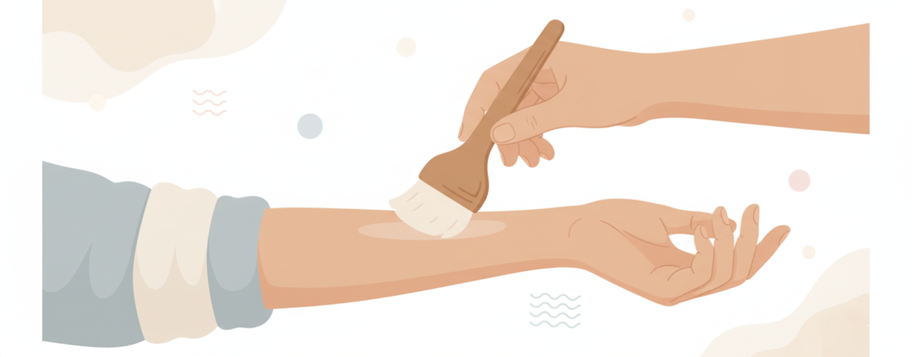

実験内容
本研究では、腕を優しく撫でる触覚刺激が持つ特性に関する基礎調査と、該当触覚が持つ痛み軽減効果について調べる実験を行います。

優しい触覚刺激による痛み軽減研究
⚠️ 注意事項
実験では腕に柔らかい触覚刺激を提示し、それと同時にPain-60（何かに集中することが難しくなるほどの痛み）に相当する熱刺激を痛み刺激として提示します。
- 一時的な痛みが伴います
- 若干の不快感を感じる可能性があります
- 下記の安全への配慮を熟知した上で、実験参加に同意される方のみ参加をお願いします
実験概要
| 募集人数 | 実験1: 30名、実験2: 20名 |
|---|---|
| 実験日程 | 2025年9月中旬～10月初旬 |
| 実験所要時間 | 実験1: 90分、実験2: 60分 |
| 謝礼金 | 実験1: 2,525円、実験2: 1,515円 Amazonギフトカードで支給 |
| 実験場所 | 筑波大学 第３エリア 3G222 |
参加対象及び除外基準
実験対象: 満18歳以上の健康な成人
❌ 除外基準:
- 中枢性脳疾患または精神疾患診断/治療歴がある方
- 上腕部に傷・火傷の跡がある方、または最近6ヶ月以内に火傷の履歴がある方
- 慢性神経痛、心臓ペースメーカー使用中の方
🛡️ 安全への配慮
本実験で提示する熱刺激は、先行研究[1][2]を含め既存の痛み研究で使用された安全性が確立されたプロトコルを通じて提示されます。
| 参加者の権利 |
• 提示される熱刺激を即座に中断する権利 • 実験自体を中止または中断できる権利 |
|---|---|
| 安全装置 |
• 刺激提示部位を常温に初期化する安全装置 • 熱刺激提示を参加者本人が即座に中断できる安全装置 |
| 保険適用 | 万が一本実験により負傷や傷害を負った場合、国立大学協会の保険（国大協保険）が適用され補償を行います。 |
📝 参加申込方法
研究情報
| 研究費/課題番号 | 科研費 25K24420 |
|---|---|
| 研究代表者 | Youchan Yim （イム ユチャン）（筑波大学・システム情報系・特任助教） |
| 連絡先 | yim [at] ftl.iit.tsukuba.ac.jp / 研究室: 3G222 |
参考文献
[1] Yim, Y., Noguchi, Y. & Tanaka, F. A wearable soft robot that can alleviate the pain and fear of the wearer. Sci Rep 12, 17003 (2022). https://www.nature.com/articles/s41598-022-21183-7
[2] Yim, Y., Xia, Z., Kubota, Y. et al. The proteus effect on human pain perception through avatar muscularity and gender factors. Sci Rep 14, 11332 (2024). https://www.nature.com/articles/s41598-024-61409-4